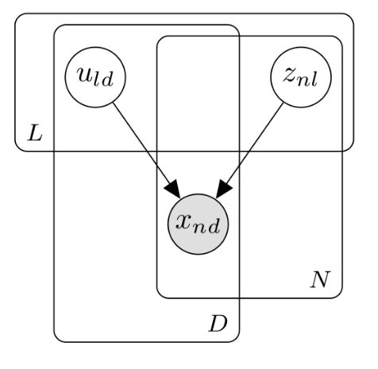
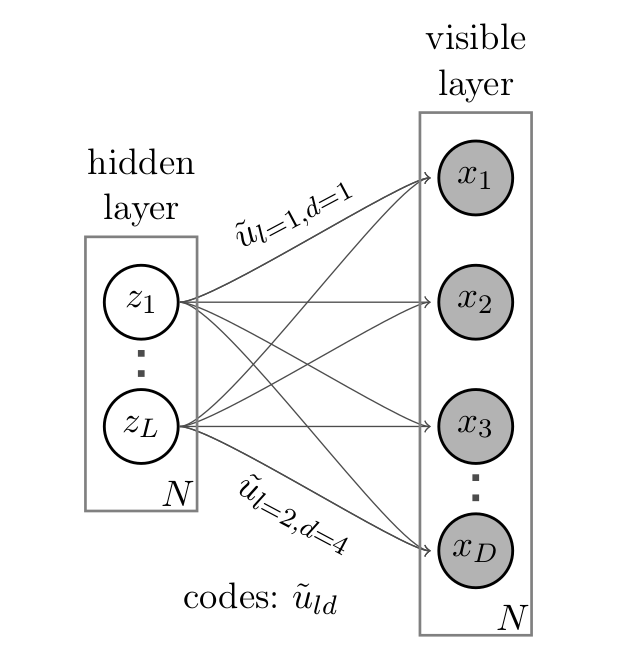
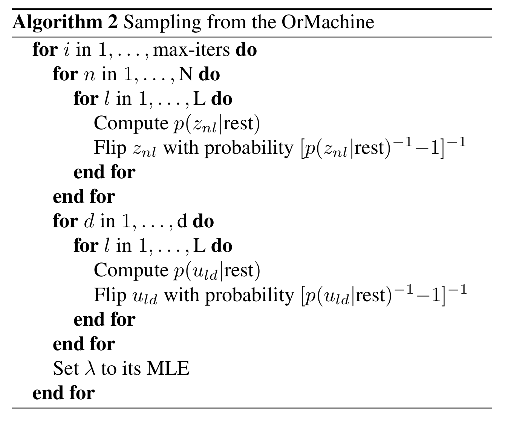

The OrMachine
Bayesian Boolen matrix factorisation
Single Cell Gene Expression

Boolean Matrix Factorisation
$$ $$
Observed Data

Factorisation

Example

Probabilistic Generative Model
$$ p(\underbrace{x_{nd}}_{\substack{\text{obser-} \\ \text{vation}}}|\overbrace{\mathbf{u}_d}^{\text{codes}},\underbrace{\mathbf{z}_n}_{\substack{\text{latent}\\ \text{rprsnt.}}},\overbrace{\lambda}^{\substack{\text{disper-}\\ \text{sion}}})= \begin{cases} \big(1+\exp[-\lambda]\big)^{-1};\;&\text{if}\;\color{darkgreen}{x_{nd}=\min(1,\mathbf{z}_n^T\mathbf{u}_d)}\;\; \\ \big(1+\exp[\lambda]\big)^{-1};\;&\text{else} \end{cases} $$
$$\;\;\;\;\;\;\;\;\;\;\;\;\;\;\;\;\;\;\;\;\;\;\;\;\;\;\; = \sigma_{\substack{\text{logistic} \\ \text{sigmoid}}}\left[\lambda \underbrace{\tilde{x}_{nd}}_{\tilde{x} = 2x-1} \left(1-2\color{brown}{\prod\limits_{l}(1-z_{nl}u_{ld})}\right) \right]$$
Inference for the OrMachine
Gibbs Sampling
Full conditional
$$ p(z_{nl}|\text{rest}) = \sigma\bigg[\lambda \tilde{z}_{nl} \sum\limits_d \tilde{x}_{nd}\; \color{darkgreen}{u_{ld}} \color{brown}{\prod\limits_{l'\neq l} (1-z_{nl'}u_{l'd})}\bigg] $$
Computational shortcuts
- \(\color{darkgreen}{u_{ld} = 0}\)
→ \(z_{nl}\) and \(x_{nd}\) disconnected. - \(\color{brown}{z_{nl'}u_{l'd} = 1}\) for \(\color{brown}{l' \neq l}\)
→ \(x_{nd}\) is explained away.
Dispersion parameter set to maximise likelihood
$$ \lambda_{\text{MLE}} = \text{logit}\left[ \text{reconstruction accuracy} \right] $$
Modified Sampler – Always propose to change
Standard Gibbs sampler

Metropolised Gibbs sampler
Examples and Experiments
Synthetic Data Benchmarks
Random Matrix Factorisation

[Message Passing: Ravanbakshs et al., ICML 2016]
Problem Setting

Random Matrix Completion

Single cell data II - 1.3 Million Brain Cells x 20k genes (E18 Mice)
 Codes: Gene sets
Codes: Gene sets
 Latent representations of each cell
$$ $$
Latent representations of each cell
$$ $$
How to chose the latent dimension?
Calculator Digit Hierarchy
- OrMachines of different dimensionality on noise-free calculator digits
Gene patterns – Cell representations

Mutations and Cellular Pathways in Different Cancer Types
Compose Layers of OrMachines

$$ $$ $$ $$ $$ $$ \(\mathbf{\otimes}\)
$$ $$ $$ $$
$$ $$ $$ $$ $$ $$
\(\mathbf{\;\rightarrow\;}\) $$ $$ $$ $$ $$ $$ $$ $$ $$ $$ $$ $$ $$ $$ $$ $$
\(\mathbf{\;\;\;\;\otimes}\)
 $$ $$
$$ $$
$$ $$
$$ $$

$$ $$ $$ $$ $$ $$
\(\mathbf{\;\leftarrow}\) $$ $$ $$ $$ $$ $$ $$ $$ $$ $$ $$ $$ $$ $$ $$ $$
\(\mathbf{\rightarrow\;\;}\)

\(\mathbf{\otimes}\)

Compose Layers of OrMachines
$$ $$ $$ $$ $$ $$ \(\mathbf{\otimes}\)
$$ $$ $$ $$
$$ $$ $$ $$ $$ $$ \(\mathbf{\;\rightarrow\;}\) $$ $$ $$ $$ $$ $$ $$ $$ $$ $$ $$ $$ $$ $$ $$ $$ \(\mathbf{\;\;\;\;\otimes}\)
 $$ $$
$$ $$
$$ $$
$$ $$

$$ $$ $$ $$ $$ $$ \(\mathbf{\;\leftarrow}\) $$ $$ $$ $$ $$ $$ $$ $$ $$ $$ $$ $$ $$ $$ $$ $$ \(\mathbf{\rightarrow\;\;}\)
\(\mathbf{\otimes}\)

Embedding

Conclusion
- Outperforms available methods for Boolean Matrix Factorisation
- Applicable and scalable to most state-of-the art genomics data.
- Compose OrMachines to link different types of knowledge.
Acknowledgements
Supervision

Chris Yau
Michalis Titsias
Chris Holmes
Funding

Additional Material
Deep noisy calculator digits
- Input: 50 digits with 70% missing observations
- Reduce reconstruction error from 1.4% to 0.4% compared to shallow model
Auto-Regulating Sparsity
Preprint on ArXiv
Hamming Machine
- Construct a probability distribution based on the hamming distance between two binary vectors, \({h(\mathbf{x},\mathbf{u})}\), and a dispersion parameter \({\lambda}\): $$ p(\mathbf{x}|\mathbf{u}) \propto \exp\left[ -\lambda \, h(\mathbf{x},\mathbf{u}) \right] $$
- Each observations \({\mathbf{x} }\) is generated from a subset of binary codes: \({\mathbf{u}_{l{=}1\ldots L}}\), selected by a vector of binary latent variables \({\mathbf{z}}\) $$ p(\mathbf{x}|\mathbf{U},\mathbf{z},\lambda) \propto \prod\limits_l p(\mathbf{x}|\mathbf{u}_l,\lambda)^{z_l} = \prod\limits_d \exp\left[- \sum_l z_l \lambda h(x_d,u_{ld}) \right]$$
- Normalising the likelihood for for binary observations yields a logistic sigmoid: $$ p(x_d = 1|\mathbf{z}, \mathbf{u}_{1\ldots L}, \lambda) = \frac{1}{1+\exp\left[-\lambda \sum\limits_l z_l (2u_{ld} - 1) \right]} = \sigma\left[\lambda \sum_l z_l \tilde{u}_{ld} \right]$$
- We defined the mapping from \({\{0,1\}}\) to \({\{{-}1,1\}\,}\): \(\;\;{\tilde{u} = 2u{-}1}\)
One-hot sampling
Introduction to Latent Variable Models
Notation and Graphical Model

- Mixture models
- Factor Analysis (PCA)
- Variables
- \({x_{nd}}\) – observations
- \({u_{ld}}\) – parameters (globale variables, weights)
- \({z_{nl}}\) – latent variables (local variables)
- Indices
- \({n = 1\ldots N}\) – observations/specimens
- \({d = 1\ldots D}\) – features (e.g. pixels or genes)
- \({l = 1\ldots L}\) – latent dimensions
- \({k = 1\ldots K}\) – layers
- N observations
- D features
- L latent variables
- K layers / abstraction levels
Neural network

- Major difference to feed forward neural nets: Nodes and weights are stochastic
What makes a good latent variable model for biological data?
Multi-layer OrMachine
With \({\mathbf{z}^{[0]}_n = \mathbf{x}_n}\) and \({L^{[0]} = D}\), that is $$ p(\mathbf{Z}^{[0:K]},\mathbf{U}^{[1:K]},\lambda) = p(\mathbf{Z}^{[K]}) \prod_{k=0}^{K-1} p(\mathbf{Z}^{[k]}|\mathbf{Z}^{[k{+}1]},\mathbf{U}^{[k{+}1]},\lambda^{[k{+}1]})\, p(\mathbf{U}^{[k{+}1]})\, p(\lambda^{[k{+}1]}) $$
The joint density factorises in terms of the form p(layer|parents)
Random matrix factorisation
Problem setting
Speed
Single cell data I

MNIST

Deep calculator digits

- Second layer representation fed forward to data layer.
A little detour: Peskun's Theorem
- We have
- A random variable \(X\) following a distribution \(\pi\)
- Transition matrices \(P_1\) and \(P_2\) that are reversible for \(\pi\): $$ \pi(x)P(x,y) = \pi(y)P(y,x) $$
- Define \(P_2 \ge P_1\), if it's true for every off-diagonal element.
- The theorem states, if $$P_2 \ge P_1$$ then: $$ v(f, \pi, P_1) \ge v(f, \pi, P_2) $$ where $$ v(f, \pi, P) = \lim_{N\rightarrow\infty} N \text{var}(\hat{I}_N) $$ is the variance of some estimator $$ \hat{I}_N = \sum\limits_{t=1}^N \frac{f(X^{(t)})}{N}\;\; \text{of}\;\; I = E_{\pi}(f)$$
Implementation
MovieLense
Percentages of correctly predicted, unobserved movie ratings.
Random matrix factorisation
$$ $$
- MAP inference using message passing.
- Outperforms all previous state-of-the-art methods.
- OrMachine features consistently lower reconstruction error
Random matrix completion
- Missing dat? Set unobserved data-point to \(x_{nd} = 0.5 \;\rightarrow\; \tilde{x}_{nd}=0\)
$$L = \prod\limits_{nd} \sigma\left[\lambda \tilde{x}_{nd} (1-2\prod\limits_{l}(1-z_{nl}u_{ld}) \right]\;\;\rightarrow\;\text{Contribute constant factor}\;\sigma(0)=\frac{1}{2}$$
$$ p(z_{nl}|\text{rest}) = \sigma\left[\lambda \tilde{z}_{nl} \sum\limits_d \tilde{x}_{nd}\; u_{ld}\prod\limits_{l'\neq l} (1-z_{nl'}u_{l'd})\right]\;\;\rightarrow\; \text{No contribution} $$
Dispersion paramter \(\lambda\)
$$ $$
- How many entries are correctly predicted by the deterministic Boolean product? $$ P = \sum\limits_{n,d} I\left[x_{nd}=(1-2\prod\limits_{l}(1-z_{nl}u_{ld}))\right] $$
- We can rewrite the likelihood $$ L = \sigma(\lambda)^P \sigma(-\lambda)^{(ND-P)} $$
- We find the MLE of \(\sigma(\lambda)\) in closed form:
$$ \sigma(\lambda)_{\text{mle}} =\frac{P}{ND}\;. $$
Metropolised Gibbs sampler - Algorithm

"Data"
Clustering via one-hot activations
A modified binary state Gibbs sampler
- Gibbs sampler: Draw a new value \(z'\) from the full conditional \(p(z'|\text{rest})\).
- Here, we propose value \(z'\) different from the previous value \(z\) with probability 1.
- Metropolis-Hasting: $$ p(\text{accept}) = p(\text{mutate})= \frac{p(z'|\text{rest}) q(z|z')}{p(z|\text{rest}) q(z'|z)} = \frac{p(z'|\text{rest})}{1-p(z'|\text{rest})} \ge p(z'|\text{rest})$$
- Typical Gibbs sampler:
- Metropolised Gibbs sampler:
Inference: Monte-Carlo EM Algorithm
Until stopping criterion is reached$$ $$For each factor matrix entry\(u_{ld}, z_{nl}\)[in parallel]Compute full conditional (using shortcuts)Update entry following Metropolised Gibbs sampler
$$ $$
Set\(\sigma(\lambda)\)to its MLE\(\big[\sigma(\lambda)_{\text{mle}}=\)MAP reconstruction accuracy\(\big]\)
Full conditionals
$$ p(z_{nl}|\text{rest}) = \sigma\bigg[\lambda \tilde{z}_{nl} \sum\limits_d \tilde{x}_{nd}\; \color{darkgreen}{u_{ld}} \color{brown}{\prod\limits_{l'\neq l} (1-z_{nl'}u_{l'd})}\bigg] $$
- Intuition: Need to consider the full Markov Blanket.
$$ $$
- Computational shortcut:
- \(\color{darkgreen}{u_{ld} = 0}\) → No effect of \(z_{nl}\) on the likelihood.
- \(\color{brown}{z_{nl'}u_{l'd} = 1}\) for \(\color{brown}{l' \neq l}\) \(\rightarrow\) \(x_{nd}\) is explained away.
The Data Revolution in Biology
Rapid increase in the availability of large molecular datasets!
$$\color{red}{\Large\mathbf{\downarrow}}$$
Better understanding of disease and better healthcare? $$ $$
Need computational and statistical tools that
- Scale to the huge datastes
- Relate to the physical and biological mechanisms that generate the data
- Can leverage on prior expert domain knowledge
- Are easy to interprete
Probabilistic Generative Model
Notation
- \({x_{nd}}\) – observations
- \({u_{ld}}\) – factor matrix: global codes
- \({z_{nl}}\) – factor matrix: local latent variables
- \(\lambda \ge 0\) – global noise parameter
Definitions
- Mapping \(\{0,1\}\) to \(\{-1,1\}\): \(\tilde{x} = 2x-1\)
- Logistic sigmoid: \(\sigma(x) = (1+\exp[-x])^{-1}\)
$$ p(x_{nd}|\mathbf{u}_d,\mathbf{z}_n,\lambda)= \begin{cases} \sigma [ \lambda];\;&\text{if}\;\color{darkgreen}{x_{nd}=\min(1,\mathbf{z}_n^T\mathbf{u}_d)}\;\; \\ 1-\sigma [ \lambda]=\sigma[-\lambda];\;&\text{if}\;x_{nd}\neq\min(1,\mathbf{z}_n^T\mathbf{u}_d) \end{cases} $$
$$\;\;\;\; = \sigma\left[\lambda \tilde{x}_{nd} \left(1-2\color{brown}{\prod\limits_{l}(1-z_{nl}u_{ld})}\right) \right]$$
Unsupervised learning
- … interpretable
- … relate to the physical data-generating mechanism.
- … ability to utilise prior expert knowledge.
- … scalable
Setup: Combine Layers of OrMachines